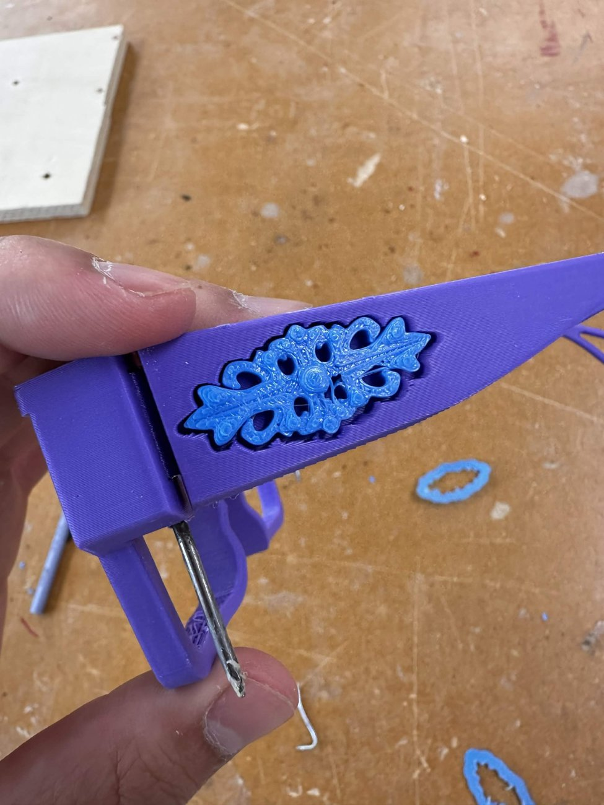
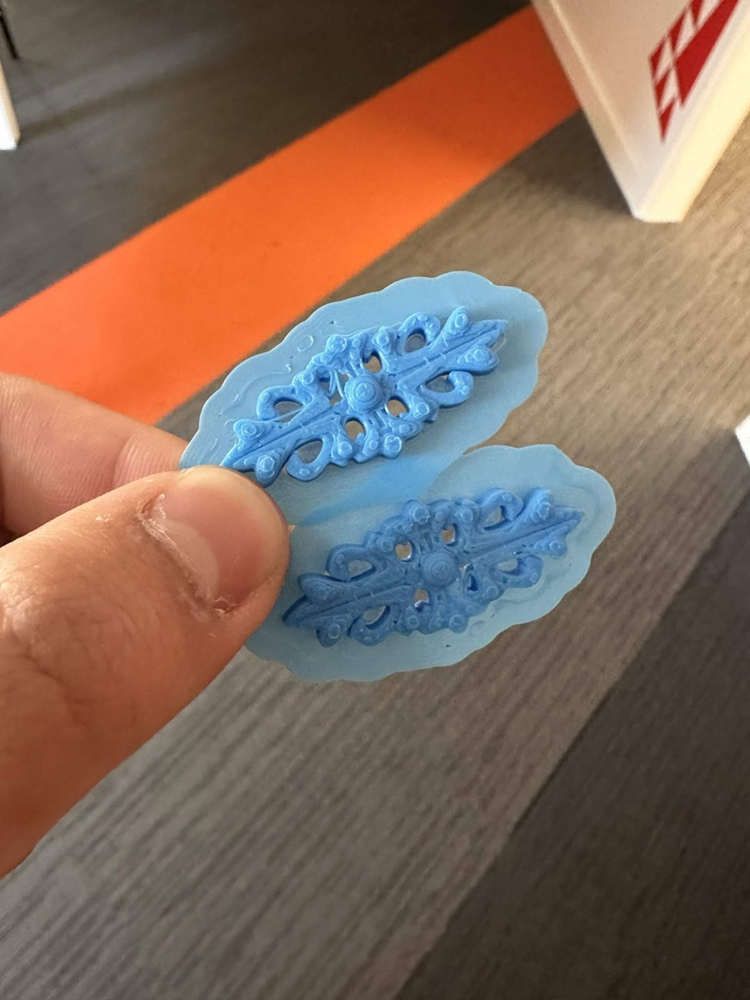

The glasses stand
Coursework 1: a stand made from two flat profiles that slot together at right angles.
Two flat pieces of MDF: one is the "nose" profile and the other the "branching" profile, with arms stepping up so a pair of glasses can rest at each level. Both are flat parts with a slot cut halfway through, so the stand packs flat and assembles without fixings. The face of the nose piece carries customisable engraved text.
The sunglasses
Coursework 2: a pair of sunglasses, fully constrained and parametric in Fusion 360. The group picked my design to take forward.
The model is built on parameters, so the frame width can be changed and the design updates around it. The frame is designed to be 3D printed upside down, with separate left and right temples featuring an engraved gold inlay, and a flat mirrored lens across the front.
- PartsFrame, 2 temples with inlays, lens
- Frame widthabout 141 mm
- Temple lengthabout 129 mm
- DesignKevin Chung
- GroupHugh Thomas, Kevin Chung, Jack Dixon

